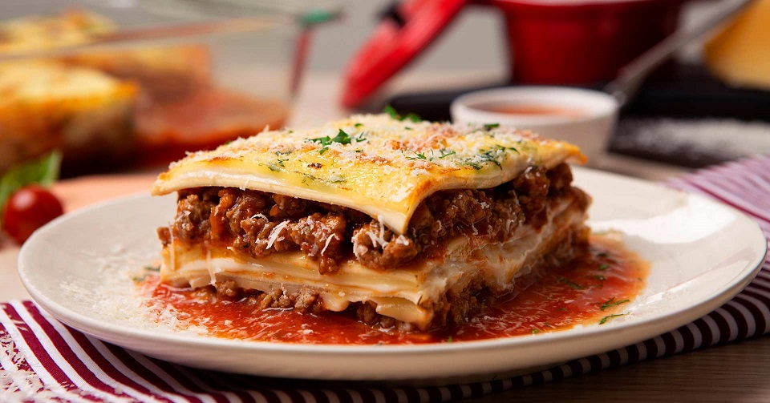

Lasagna

A delicious Italian recipe
A delicious recipe for a sunday afternoon with family. A recipe with n easy meat sauce as the base and lots of cheese
Ingredients
- 1 clove garlic
- 1 cup spaghetti sauce
- 1 cup shredded mozzarella cheese
- 2 tablespoons grated Parmesan cheese
- 1/2 pound ground beef
Steps
- Heat the oven to 400°. Peel and finely chop the garlic. Cook the beef and garlic in the skillet over medium heat about 5 minutes, stirring occasionally, until the beef is brown; drain.
- Stir the Italian seasoning and spaghetti sauce into the beef. Spread 1/4 cup of the beef mixture in the ungreased square pan.
- Top with 2 noodles, placing them so they do not overlap or touch the sides of the pan because they will expand as they bake. Spread about 1/2 cup of the remaining beef mixture over the noodles.
- Spread about 1/2 cup of the cottage cheese over the beef mixture. Sprinkle with about 1/3 cup of the mozzarella cheese.
- Repeat layering twice more, beginning with 2 more noodles and following directions in steps 3 and 4 Sprinkle with the parmesan cheese.
- Cover with aluminum foil and bake 30 minutes. Carefully remove the foil, and continue baking about 10 minutes longer or until lasagna is bubbly around the edges and looks very hot. Let stand 10 minutes, so the lasagna will become easier to cut and serve.
Return to main page